新的一天，新的开始。兄弟们冲啊！想着混吃等死。做一条咸鱼，不求上进，没有未来的冲啊
绑定 github 地址
1 | git config --global user.name "你的GitHub用户名" |
绑定github邮箱
1 | git config --global user.email "你的GitHub注册邮箱" |
生成公匙 （ssh）
1 | ssh-keygen -t rsa -C "邮箱名称" |
然后直接三个回车即可，默认不需要设置密码
生成文件位置为：C/user/用户名文件夹/ssh 文件中的 id_rsa.pub
博客搭建：
1、全局下载hexo命令 npm install -g hexo-cli
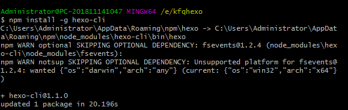
2、初始化hexo hexo init blog
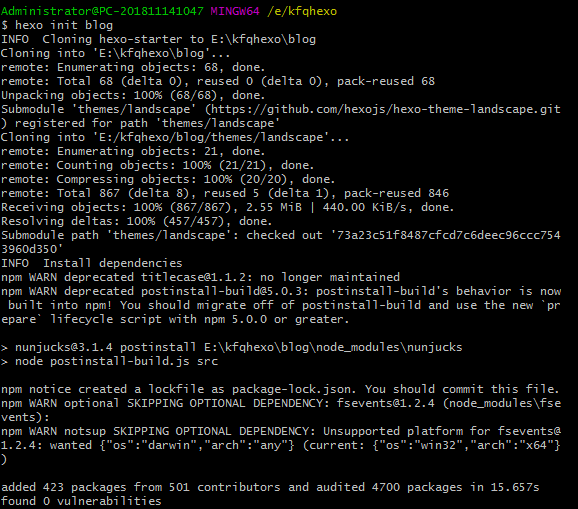
3、进入 blog 文件夹 cd blog
4、执行一下三步
1 | hexo new 名称 |
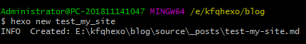
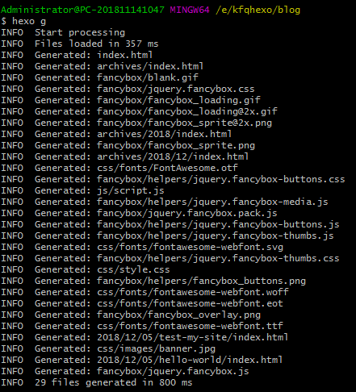
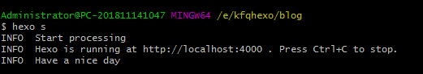
此时可以在浏览器中输入 http://localhost:4000 查看预览效果
5、修改 配置文件
在blog根目录里的_config.yml文件称为站点配置文件。
在后面 加入下面的代码
1 | deploy: |
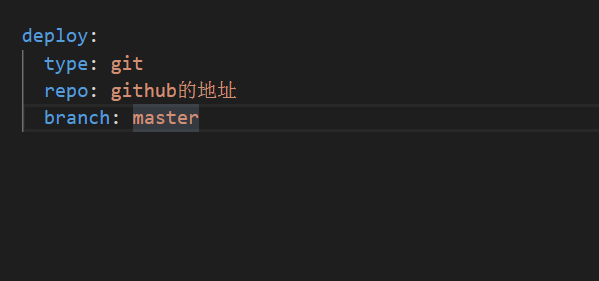
6、安装hexo-deployer插件为hexo deployer 命令做准备
npm install hexo-deployer-git –save
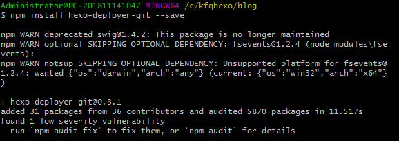
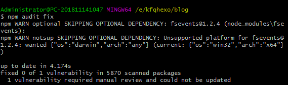
7、执行以下三步
1 | hexo clean |
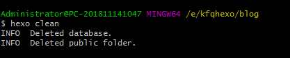
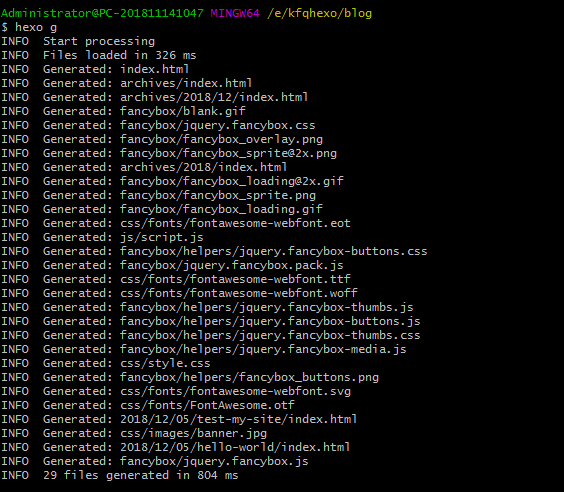
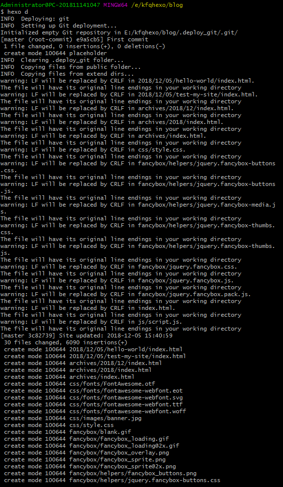
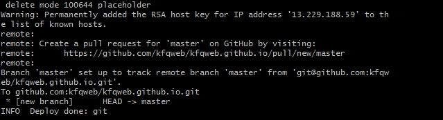
大功告成
Hexo 约有二十个命令，但普通用户经常使用的大概只有下列几个:
hexo server(hexo server)
启动本地服务器，用于预览主题。默认地址： http://localhost:4000/
hexo new 名称（例： hexo new “学习笔记 一”）
新建一篇标题为 学习笔记 六 的文章，因为标题里有空格，所以加上了引号。
hexo d （需要在 _config.yml 文件中 加入部分配置代码）
deploy后面的三个参数，应该这样：
1 | deploy: |
变量名之前两个空格，参数值前一个空格，用:分割
- 自动生成网站静态文件，并部署到设定的仓库。
- hexo d 是 hexo deploy 的缩写，命令效果一致。
hexo clean
- 清除缓存文件 db.json 和已生成的静态文件 public 。
- 网站显示异常时可以执行这条命令试试。
hexo generate (hexo g)
- 生成网站静态文件到默认设置的 public 文件夹。
- 便于查看网站生成的静态文件或者手动部署网站；
- 如果使用自动部署，不需要先执行该命令；